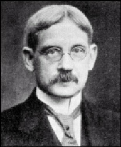

|  |
Duane's syndrome = The characteristic lid narrowing and retraction of the globe on adduction, caused by simultaneous contraction of the medial and lateral rectus muscles, help identify the condition. Duane's retraction syndrome is frequently mistaken for a sixth-nerve palsy in infancy because of deficient abduction of the involved eye. In fact, as a cause of limited abduction Duane's syndrome is quite common in children, so it must be kept in mind.
Alexander Duane was one of the first investigators in ophthalmology with a special interest in accommodation and squint. He was born into a prominent family in Molone, New York. His father was the army general James Duane and his boyhood was spent moving between various postings. He was educated at the Union College, Cincinnati, where he gained many academic rewards and thereafter studied medicine at the College of Physicians and Surgeons, New York, which later became the medical school of Columbia University.
After graduation in 1881 Duane interned at the New York Hospital and was educated in eye medicine by the German-born American ophthalmologist Hans Jakob Knapp (1832-1911). He specialised in this discipline and commenced ophthalmological practice in New York in 1884. For a brief period he taught ophthalmology at the Cornell University.
During his boyhood his mother, a woman of considerable literary abilities, gave him extensive instruction in the English language. He put this knowledge to use during his internship when he developed an interest in lexicography and supplied medical terms for several standard dictionaries. Duane also received training in mathematics from his father and he applied these skills to an analysis of the movements of the extraocular muscles, publishing a classic account of motor abnormalities in 1896.
His work in this field, together with his investigations of accommodation and refraction, represent his great contribution to the science of ophthalmology. Still, perhaps, he was most noted for his translations of the textbook by the Viennese authority Ernst Fuchs, which appeared in English in 1903 under the title of Fuchs Textbook of Ophthalmology and ran into eight editions.
During the Spanish-American War Duane served in the US Navy as a signal officer, and in the Great War on the American ship Granite State. He was also the author of a monograph entitled Rules for signalling on land and sea which was first published in 1899.
Duane received an honorary doctorate of science from his university and was elected chairman of the ophthalmological section of the American Medical Association in 1917.
Bibliography:
Student’s dictionary of medicine.
Philadelphia, 1893; 3rd edition, 1900.
A new classification of the motor anomalies of the eye.
New York, 1897.Obituary in Archives of Ophthalmology, Chicago, 1927, 56: 66.